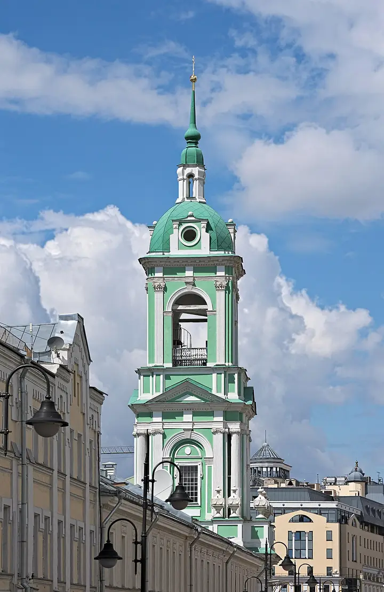
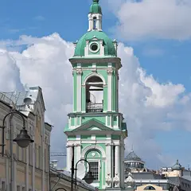

Фото здания: Dmitry Ivanov., CC BY-SA 4.0 · Wikimedia Commons
Кофейня в колокольне · ЦАО
Перезвон
Кофе и выпечка под высокими сводами светло-зелёной колокольни XVIII века у храма Иоанна Предтечи под Бором. В тёплые дни столики стоят во дворике храма.
- ₽ · до 1 500 ₽ на человека
- Новое в каталоге
- в 1 плане
Позвать сюда: ПерезвонОткрыть в каталоге: ПерезвонМаршрут до места: Перезвон
Адрес и детали
- Адрес
- Пятницкая ул., 4/2, стр. 9
Открыть на Яндекс Картах (в новой вкладке) - Метро
- м. Третьяковская
- Округ
- Центр (ЦАО)
- Цена
- до 1 500 ₽ на человека
- Проверено
- работает — проверили в ноябре 2026
Планы с этим местом 1

- Перезвон · Кофейня в колокольне · м. Третьяковская
- 9 минут пешкомТретьяковка на Кадашёвской · Музей
Капучино под сводами колокольни XVIII века на Пятницкой, потом выставка в Третьяковке на Кадашёвской набережной.
Открыть план: Кофе в колокольне и КадашиПозвать сюда: Кофе в колокольне и Кадаши
Фото здания: Dmitry Ivanov., CC BY-SA 4.0 · Wikimedia Commons
Входит в подборки
Похожие рядом
Что ещё рядом

Как позвать
- Выбери план, место или событие — в карточке адрес, цены и маршрут в Яндекс Картах.
- Нажми «Позвать сюда» — соберётся приглашение-игра для свидания или голосование для компании.
- Отправь ссылку в любой мессенджер: тебе ответят, а компания отметит, куда и когда может. Бесплатно и без регистрации.